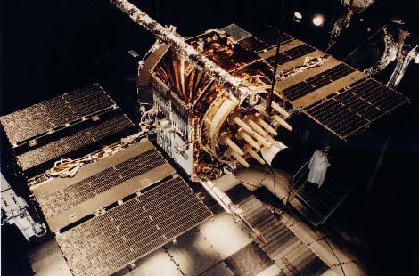

|

Satélite NAVSTAR GPS
|
El GPS (Global Positioning System: sistema de posicionamiento global) o NAVSTAR-GPS es un sistema global de navegación por satélite que permite determinar en todo el mundo la posición de un objeto, una persona, un vehículo o una nave, con una precisión hasta de centímetros.
El GPS funciona mediante una red de 24 satélites en órbita sobre
la Tierra, a 20.200 km, con trayectorias sincronizadas cubriendo toda la superficie de la Tierra.
Para determinar la posición, el receptor localiza automáticamente como mínimo tres satélites de la red, de los que recibe unas señales indicando la identificación y la hora del reloj de cada uno de ellos. Con base en estas señales, el aparato sincroniza el reloj del GPS y calcula el tiempo que tardan en llegar las señales al equipo, y de tal modo mide la distancia al satélite mediante "triangulación". |